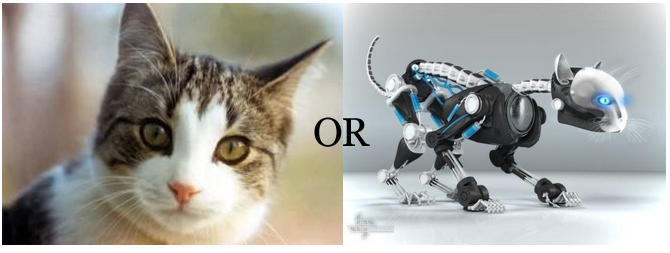

This is a console based game in which a shelter rescues pets. The pet can be organic or robotic, dog or cat. Depending on the features, the pets behave differently. Some of the features the user can choose in order to interact with the pets within the shelter are rescue, feed, play, walk, and clean. 
This console based project involves a hospital which hires four specific employees: a doctor,
nurse, receptionist, and janitor. All employees share certain features
such as employee ID, receiving salary, and having a name. However, each employee also has a
specific task.
The user is able to play as any employee.

Skills
-
Java • Spring • Hibernate • JPA • JavaScript • MVC • HTML • CSS • Flexbox • Grid • TDD
Agile (Scrum) • Object Oriented Programming (OOP) •
AJAX • JSON • Restful APIs • Responsive Design / Mobile •
Structured Query Language (SQL) • Relational Databases •
Source Control / Git